Mikael Östberg
@mikaelostberg
inloop.se
Weird and Wonderful
What is MVVM?
..and why should I care
..and why should I care
Model as in Model
View as in View
View Model as in Model of the View
View as in View
View Model as in Model of the View
Separating data and presentation
..again
Why MVVM?
· Create rich dynamic UIs
· Be awesome
· Be awesome
This what I used to do
1999
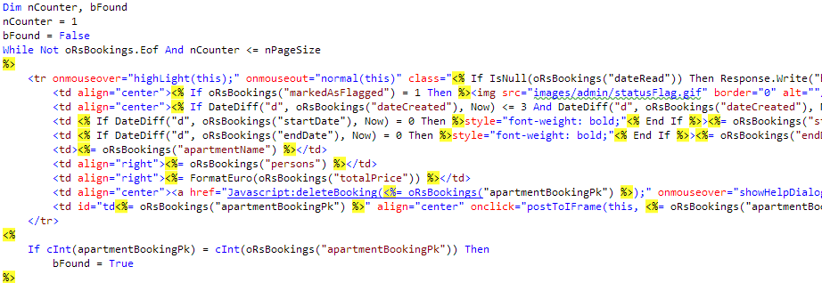
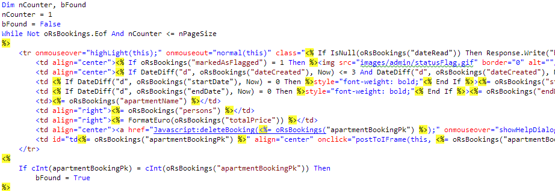
2001
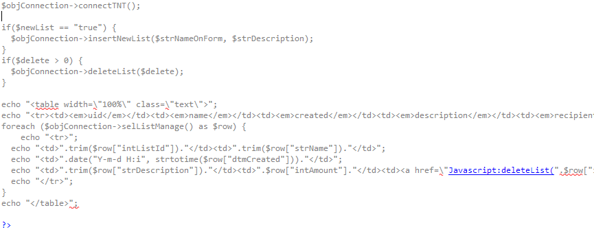
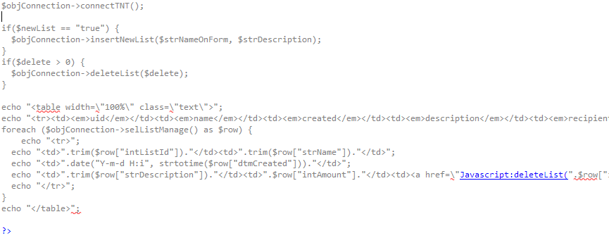
2004
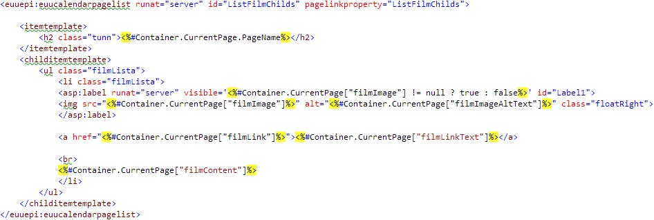
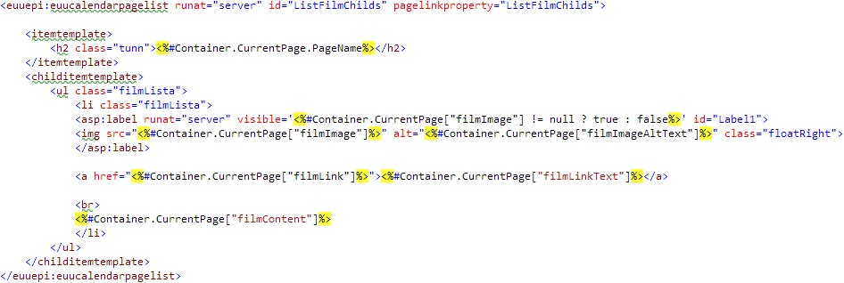
2005
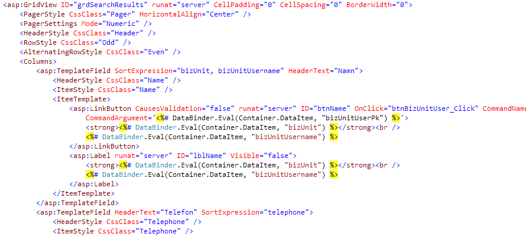
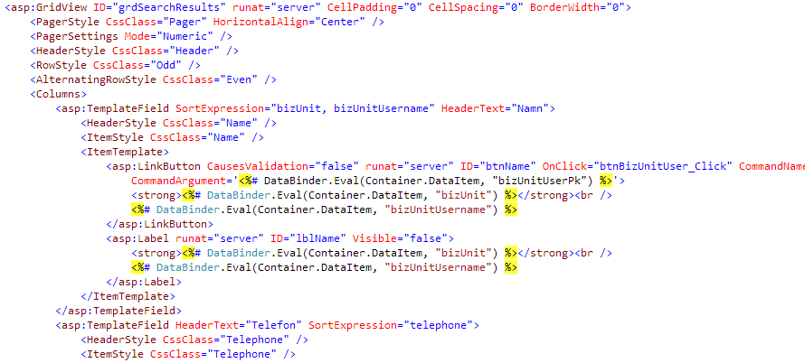
2007
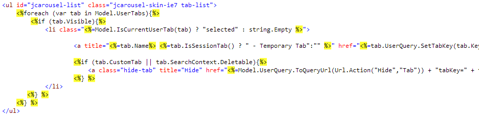
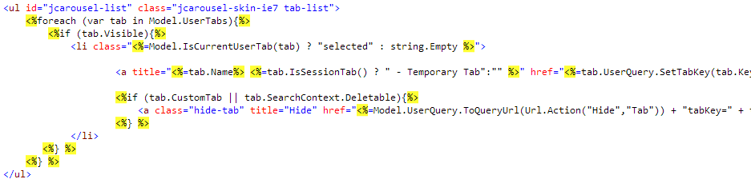
2011
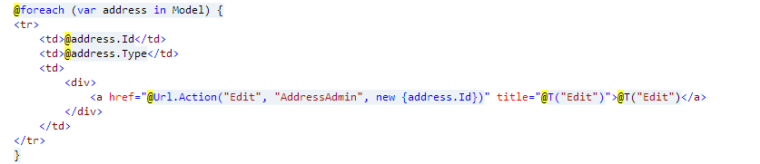
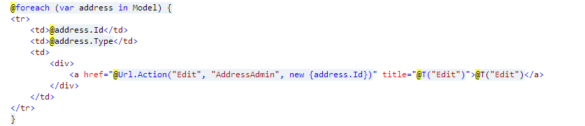
What do they all share in common?
..they are all server side
Let's look at what we really are working with
html
js
http
data